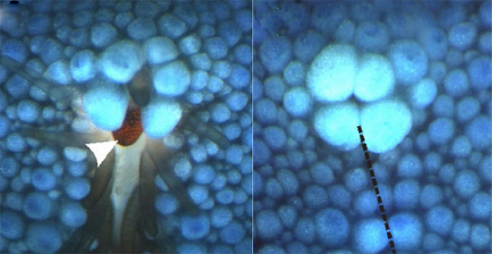

Navigate Like a Starfish

Phenomenon: "Eye Spots"
Starfish don't have brains, or eyes in the sense that we as humans are used to. So how do they see and find their way home? With little dots on the end of each arm called "eye spots". These eye spots are able to detect light versus dark (as long as an object isn't moving past too quickly). Because their home, the reef, never moves, they are drawn back home as their eye spots lead them based on the light that emits off the reef.
Concept
Assume user has their eyes closed. Create a machine that indicates the presence of a light source by "guiding" the users arm/hand in the associated direction.
Creating Empathy
For those of us humans who are blessed with all 5 functioning senses, we often rely on vision to guide us through the world. What would happen if both vision and free will are taken away? This project aims to articulate to humans what it would be like to be guided through the world (one of darkness) as opposed to choosing which directions we move with our brain. How can this be applied to the visually impared community in the human environment?
Execution/How It Works
This glove (future set of gloves) has a servo motor embeded in a single finger which models the placement of a Starfish's eye spot. Starfish have one eye spot per arm, therefore this product would be designed with two for humans (one per arm). Using the input of a photosensor that is sensitive to bright light, a user with impared vision would be able to navigate towards light based on the feeling they receive in the glove.

User Testing/Findings
Users were instructed to close their eyes and vocalize the switch between "light" and "dark" when they felt a shift in the finger of the glove. Feedback was that the glove felt sort of creepy (likely due to the fact that it was hooked up to open wires) and some moments of movement were unclear to users. Users would like the product to evolve to a direction-based system.
Future Iterations
- Different output (not servo), something that gives a tug or pressure feeling in the fingers of the glove
- Two gloves (one for each hand), output actually pulls/signals user towards light source
- More compact housing for arduino that could perhaps adhere to top of glove(s)